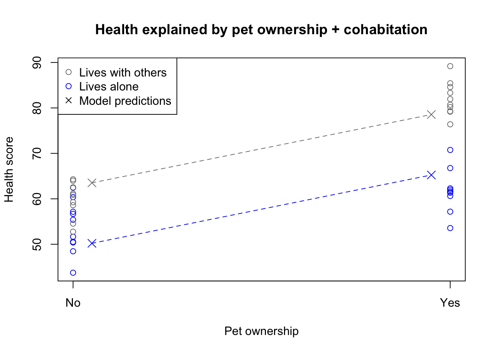
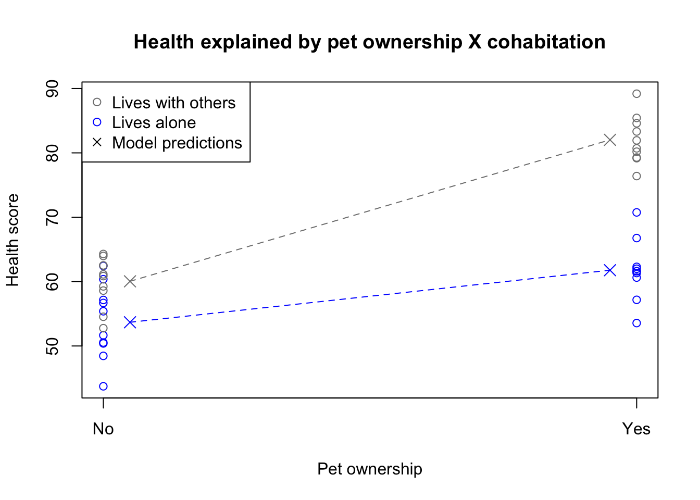
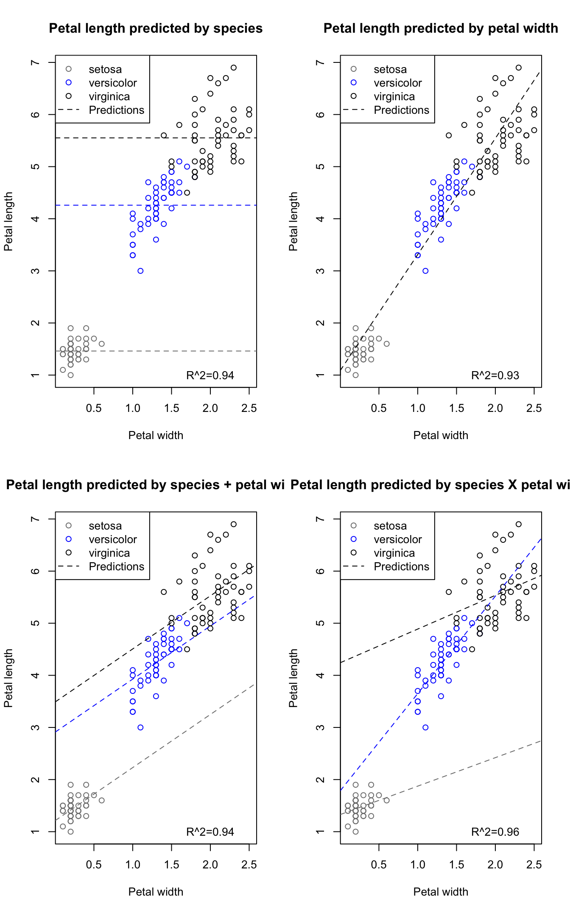

The two-factor model in the previous section viewed the various forms of pet ownership and cohabitation as strictly additive effects. Owning a cat instead of a bunny was linked to a 4.5-unit health increase no matter whether someone lived alone or not. Living alone was linked to a 3-unit health decrease no matter what type of pet someone owns.
However, it’s quite possible for a predictor’s effect on the response variable to depend on the values taken by a second predictor. When we allow the betas of one predictor to change depending on the values of other predictors, we say that the model contains an interaction term.
The name “interaction” may conjure images of pharmaceutical drugs, and indeed they provide a very close metaphor: a drug interaction is a statistical interaction. For example, quickly drinking several alcoholic beverages usually causes drunkenness. Taking several acetaminophen pills usually relieves a headache or fever symptoms. From these individual effects, you might suppose that taking both several drinks and several pills would allow you to avoid the unpleasant effects of a hangover. Not so — alcohol and acetaminophen are contraindicated and taking them together instead risks acute liver failure! The effect of each drug changes when in the presence of the other.
We shall now study how to incorporate such interactions in our regression models.
Interactions between two factor variables
As we learn more about interaction terms, remember the following fact: behind their complex interpretations, every interaction term is simply a new variable equal to the product of two (or more) other variables. This new term enters the model and receives a beta just like any other new predictor.
Consider a two-factor model for health score which only examines the 1/0 indicator variables on pet ownership and living alone. We can add an interaction term equal to their product — and since the components are always 1 or 0, then their product is as well:
\(X_1:\) Owns pets
\(X_2:\) Lives alone
\(X_3=X_1*X_2:\) Interaction
0
0
0
0
1
0
1
0
0
1
1
1
When we place a new beta on this interaction term, we essentially add an extra shift to the model predictions which only occurs when \(X_1\) and \(X_2\) are both set to 1 together. The practical effect of this term is to allow for non-additive effects. Let’s illustrate the model first without an interaction (sometimes called the main effects model), and then with an interaction:
Code
set.seed(2014)twofact <-data.frame(pet=rep(1:0,each=20),alone=rep(c(1,0,1,0),each=10),health=rnorm(40,mean=60,sd=5))twofact$health <- twofact$health+10*(twofact$pet-twofact$alone+twofact$pet*(1-twofact$alone))twofact.lm <-lm(health~pet+alone,twofact)twofact.lm2 <-lm(health~pet*alone,twofact)plot(twofact$pet,twofact$health,col=c('grey50','#0000ff')[1+twofact$alone],main='Health explained by pet ownership + cohabitation',ylab='Health score',xaxt='n',xlab='Pet ownership')axis(side=1,at=c(0,1),labels=c('No','Yes'))points(x=c(0.05,0.05,0.95,0.95),y=c(twofact.lm$coefficients[1], twofact.lm$coefficients[1]+twofact.lm$coefficients[3], twofact.lm$coefficients[1]+twofact.lm$coefficients[2],sum(twofact.lm$coefficients)),col=c('grey50','#0000ff','grey50','#0000ff'),pch=4,cex=1.5)segments(x0=c(0.05,0.05),x1=c(0.95,0.95),col=c('grey50','#0000ff'),y0=c(twofact.lm$coefficients[1], twofact.lm$coefficients[1]+twofact.lm$coefficients[3]),y1=c(twofact.lm$coefficients[1]+twofact.lm$coefficients[2],sum(twofact.lm$coefficients)),lty=2)legend(x='topleft',pch=c(1,1,4),col=c('grey50','#0000ff','black'),legend=c('Lives with others','Lives alone','Model predictions'))

Main effects model with two 1/0 factors
Notice how the pet ownership effect is constant among both living situation groups, creating parallel lines of best fit. However, the model doesn’t fit particularly well: you can see that the predictions are not centered within each group of observations. The model plotted above has the following functional form:
Now let’s see how the model changes when we add the interaction term:
Code
plot(twofact$pet,twofact$health,col=c('grey50','#0000ff')[1+twofact$alone],main='Health explained by pet ownership X cohabitation',ylab='Health score',xaxt='n',xlab='Pet ownership')axis(side=1,at=c(0,1),labels=c('No','Yes'))points(x=c(0.05,0.05,0.95,0.95),y=c(twofact.lm2$coefficients[1], twofact.lm2$coefficients[1]+twofact.lm2$coefficients[3], twofact.lm2$coefficients[1]+twofact.lm2$coefficients[2],sum(twofact.lm2$coefficients)),col=c('grey50','#0000ff','grey50','#0000ff'),pch=4,cex=1.5)segments(x0=c(0.05,0.05),x1=c(0.95,0.95),col=c('grey50','#0000ff'),y0=c(twofact.lm2$coefficients[1], twofact.lm2$coefficients[1]+twofact.lm2$coefficients[3]),y1=c(twofact.lm2$coefficients[1]+twofact.lm2$coefficients[2],sum(twofact.lm2$coefficients)),lty=2)legend(x='topleft',pch=c(1,1,4),col=c('grey50','#0000ff','black'),legend=c('Lives with others','Lives alone','Model predictions'))

Interaction model with two 1/0 factors
You can see that the new interaction term has allowed the effect of pet ownership to vary depending on living situation. The lines of best fit are no longer parallel to each other but do fit the data noticeably better. The model’s functional form has added the new interaction term:
\[y_i = \beta_0 + \beta_1 1\!\!1\{x_{1,i} = \mathrm{pets}\} + \beta_2 1\!\!1\{x_{2,i} = \mathrm{alone}\} + \beta_3 1\!\!1\{x_{1,i} = \mathrm{pets}\,\&\,x_{2,i} = \mathrm{alone}\} + \varepsilon_i\] And the parameter estimates would be:
Model term
Estimate
p-value
Interpretation
\(\hat{\beta}_0\)
\(60.0\)
\(\lt0.0001\)
Average health of a non-pet owner with roommate
\(\hat{\beta}_1\)
\(22.0\)
\(\lt0.0001\)
Shift applied to all pet owners
\(\hat{\beta}_2\)
\(-6.4\)
\(0.0036\)
Shift applied to all those living alone
\(\hat{\beta}_3\)
\(-13.9\)
\(\lt0.0001\)
Additional shift applied to pet owners living alone
The small p-values of all these parameters show a high level of statistical significance, which confirms our visual impression that the interaction term has helped us to better understand and explain the data.
Interactions between two continuous variables
Interaction terms can also be used to capture the non-linear, synergistic effects of two or more continuous variables. Rather than a “shift” from one level to the next, we may instead interpret the interaction term as a way to turn one variable’s beta (slope) from a constant parameter to a “slider” of sorts which creates smoothly varying slopes for different values of the other predictor.
This may be one instance where an equation can make the text plainer, rather than the other way around — below, I will write out a regression formula with two continuous predictors and their interaction term, and then I will twice re-arrange terms and re-write the equation so that you can see how the interaction can be used to modify either original slope.
All three of these equations are arithmetically equal. The interaction term has effectively become “a slope on a slope”, modifying the effect size of one variable as the other variable changes.
Illustrating the effect of adding these interaction terms can be difficult: when dealing with multiple continuous predictors, we generally have to resort to 3D plots, choropleths, contour plots, etc. Let’s instead focus simply on reading and interpreting a table of coefficients. Consider a hypothetical regression predicting the auction value of diamonds of various sizes (measured in carats) and clarities (measured continuously 0–100, with 100 being flawless). We can guess that large diamonds cost more, and that diamonds of better clarity cost more. We may also guess that a flawless large diamond is exceptionally rare and valuable, since imperfections are more easily hidden in smaller gems.
We may suppose some parameter estimates, just for the sake of illustration:
Model term
Estimate
Interpretation
\(\hat{\beta}_0\)
\(75\)
Fixed costs of buying any diamond (shipping, certification, etc.)
\(\hat{\beta}_1\)
\(800\)
All else equal, every additional carat adds 800 to the cost
\(\hat{\beta}_2\)
\(5\)
A 1-point increase in clarity always adds at least 5 to the cost
\(\hat{\beta}_3\)
\(20\)
The same 1-point increase in clarity adds 25 to the cost of a 1-carat diamond and 45 to the cost of a 2-carat diamond
Interactions between factors and continuous variables
Now that we have seen how interactions between factors and interactions between continuous predictors work, it will not be difficult to understand the interaction between a factor and a continuous variable. In general, these interactions allow us to model separate slopes for a continuous predictor among different category groups.
Rather than spell out each parameter as I have done above, allow me to present a visual narrative of working with these mixed interaction terms, drawn from a famous (or infamous) dataset on iris flowers. This dataset is so often used by textbook writers and package authors that I have tried to avoid it, but unfortunately it fits our current scenario perfectly.
In 1936, the famous statistician Ronald Fisher published a case study of iris data gathered in New Brunswick, Canada some years earlier by Edgar Anderson. The data included petal length and petal width measurements on 150 different flowers, split equally among three species: Iris versicolor, Iris virginica, and Iris setosa.
Let’s seek to model petal length using four models:
Simply using species
Simply using petal width
Using both species and petal width
Using species, petal width, and an interaction term
Notice the changing models and model fits associated with these specifications, seen below. Adding the factor for species allows us to fit different intercepts for different flower species. Adding the interaction term allows us to also fit different slopes for different flower species. The final model allows us to fit a separate intercept and slope to each iris species, though the explanatory power of the model only increases slightly. Later we shall learn techniques which we can use to assess which model makes more sense.
Code
iris.lm1 <-lm(Petal.Length~Species,iris)iris.lm2 <-lm(Petal.Length~Petal.Width,iris)iris.lm3 <-lm(Petal.Length~Species+Petal.Width,iris)iris.lm4 <-lm(Petal.Length~Species*Petal.Width,iris)par(mfrow=c(2,2))plot(iris$Petal.Width,iris$Petal.Length,col=rep(c('grey50','#0000ff','black'),each=50),main='Petal length predicted by species',xlab='Petal width',ylab='Petal length')abline(h=tapply(iris$Petal.Length,iris$Species,mean),col=c('grey50','#0000ff','black'),lty=2)legend(x='topleft',legend=c('setosa','versicolor','virginica','Predictions'),col=c('grey50','#0000ff','black','black'),pch=c(1,1,1,NA),lty=c(NA,NA,NA,2))text(x=2,y=1,labels=paste0('R^2=',round(summary(iris.lm1)$r.squared,2)))plot(iris$Petal.Width,iris$Petal.Length,col=rep(c('grey50','#0000ff','black'),each=50),main='Petal length predicted by petal width',xlab='Petal width',ylab='Petal length')abline(a=iris.lm2$coefficients[1],b=iris.lm2$coefficients[2],lty=2)legend(x='topleft',legend=c('setosa','versicolor','virginica','Predictions'),col=c('grey50','#0000ff','black','black'),pch=c(1,1,1,NA),lty=c(NA,NA,NA,2))text(x=2,y=1,labels=paste0('R^2=',round(summary(iris.lm2)$r.squared,2)))plot(iris$Petal.Width,iris$Petal.Length,col=rep(c('grey50','#0000ff','black'),each=50),main='Petal length predicted by species + petal width',xlab='Petal width',ylab='Petal length')abline(a=iris.lm3$coefficients[1],b=iris.lm3$coefficients[4],lty=2,col='grey50')abline(a=iris.lm3$coefficients[1]+iris.lm3$coefficients[2],b=iris.lm3$coefficients[4],lty=2,col='#0000ff')abline(a=iris.lm3$coefficients[1]+iris.lm3$coefficients[3],b=iris.lm3$coefficients[4],lty=2,col='black')legend(x='topleft',legend=c('setosa','versicolor','virginica','Predictions'),col=c('grey50','#0000ff','black','black'),pch=c(1,1,1,NA),lty=c(NA,NA,NA,2))text(x=2,y=1,labels=paste0('R^2=',round(summary(iris.lm1)$r.squared,2)))plot(iris$Petal.Width,iris$Petal.Length,col=rep(c('grey50','#0000ff','black'),each=50),main='Petal length predicted by species X petal width',xlab='Petal width',ylab='Petal length')abline(a=iris.lm4$coefficients[1],b=iris.lm4$coefficients[4],lty=2,col='grey50')abline(a=iris.lm4$coefficients[1]+iris.lm4$coefficients[2],b=iris.lm4$coefficients[4]+iris.lm4$coefficients[5],lty=2,col='#0000ff')abline(a=iris.lm4$coefficients[1]+iris.lm4$coefficients[3],b=iris.lm4$coefficients[4]+iris.lm4$coefficients[6],lty=2,col='black')legend(x='topleft',legend=c('setosa','versicolor','virginica','Predictions'),col=c('grey50','#0000ff','black','black'),pch=c(1,1,1,NA),lty=c(NA,NA,NA,2))text(x=2,y=1,labels=paste0('R^2=',round(summary(iris.lm4)$r.squared,2)))

Different models for iris petal length
Visualizer
#| '!! shinylive warning !!': |
#| shinylive does not work in self-contained HTML documents.
#| Please set `embed-resources: false` in your metadata.
#| standalone: true
#| viewerHeight: 650
library(shiny)
library(bslib)
ui <- page_fluid(
tags$head(tags$style(HTML("body {overflow-x: hidden;}"))),
title = "Interaction term explorer",
fluidRow(column(width=6,checkboxInput("X1cat","X1 is categorical")),
column(width=6,checkboxInput("X2cat","X2 is categorical"))),
fluidRow(column(width=6,checkboxInput("b2","Include X2 term?")),
column(width=6,checkboxInput("b3","Include Interaction?"))),
fluidRow(plotOutput("distPlot")))
catcols <- c('#ee7011','#0000ff')
concols <- c('#ee7011','#dd6822','#cc6033','#bb5844','#aa5055',
'#994866','#884077','#773888','#663099','#5528aa',
'#4420bb','#3318cc','#2210dd','#1108ee','#0000ff')
fewcols <- c('#dd6822','#aa5055','#773888','#4420bb','#1108ee')
server <- function(input, output){
output$distPlot <- renderPlot({
X1 <- reactive(if (!input$X1cat) runif(100,0,3) else sample(0:1,100,TRUE))
X2 <- reactive(if (!input$X2cat) runif(100,3,6) else sample(0:1,100,TRUE))
Y <- reactive(15-2*c(X1())+c(X2())-1.2*c(X1())*c(X2())+rnorm(100))
if (input$X1cat){
plot(x=jitter(X1(),factor=0.25),y=Y(),main=NULL,xlab='X1',ylab='Y',
type='p',cex=1.5,xlim=c(-1,2),xaxt='n',
col=ifelse(rep(input$X2cat,100),catcols[1+X2()],concols[1+floor(5*(X2()-3))]))
axis(side=1,at=c(0,1),labels=c('Level A','Level B'))} else {
plot(x=X1(),y=Y(),main=NULL,xlab='X1',ylab='Y',type='p',cex=1.5,
col=ifelse(rep(input$X2cat,100),catcols[1+X2()],concols[1+floor(5*(X2()-3))]))}
if (!input$b2 & !input$b3){
lm1 <- lm(Y() ~ X1())
abline(lm1$coefficients[1],lm1$coefficients[2],col='grey50',lwd=3,lty=2)}
if (input$b2 & !input$b3){
lm1 <- lm(Y() ~ X1() + X2())
if (input$X2cat){
abline(lm1$coefficients[1],lm1$coefficients[2],lwd=3,lty=2,col=catcols[1])
abline(lm1$coefficients[1]+lm1$coefficients[3],lm1$coefficients[2],lwd=3,lty=2,col=catcols[2])} else {
abline(lm1$coefficients[1]+3.3*lm1$coefficients[3],lm1$coefficients[2],lwd=3,lty=2,col=fewcols[1])
abline(lm1$coefficients[1]+3.9*lm1$coefficients[3],lm1$coefficients[2],lwd=3,lty=2,col=fewcols[2])
abline(lm1$coefficients[1]+4.5*lm1$coefficients[3],lm1$coefficients[2],lwd=3,lty=2,col=fewcols[3])
abline(lm1$coefficients[1]+5.1*lm1$coefficients[3],lm1$coefficients[2],lwd=3,lty=2,col=fewcols[4])
abline(lm1$coefficients[1]+5.7*lm1$coefficients[3],lm1$coefficients[2],lwd=3,lty=2,col=fewcols[5])}}
if (!input$b2 & input$b3){
lm1 <- lm(Y() ~ X1() + X1():X2())
if (input$X2cat){
abline(lm1$coefficients[1],lm1$coefficients[2],lwd=3,lty=2,col=catcols[1])
abline(lm1$coefficients[1],lm1$coefficients[2]+lm1$coefficients[3],lwd=3,lty=2,col=catcols[2])} else {
abline(lm1$coefficients[1],lm1$coefficients[2]+3.3*lm1$coefficients[3],lwd=3,lty=2,col=fewcols[1])
abline(lm1$coefficients[1],lm1$coefficients[2]+3.9*lm1$coefficients[3],lwd=3,lty=2,col=fewcols[2])
abline(lm1$coefficients[1],lm1$coefficients[2]+4.5*lm1$coefficients[3],lwd=3,lty=2,col=fewcols[3])
abline(lm1$coefficients[1],lm1$coefficients[2]+5.1*lm1$coefficients[3],lwd=3,lty=2,col=fewcols[4])
abline(lm1$coefficients[1],lm1$coefficients[2]+5.7*lm1$coefficients[3],lwd=3,lty=2,col=fewcols[5])}}
if (input$b2 & input$b3){
lm1 <- lm(Y() ~ X1() + X2() + X1():X2())
if (input$X2cat){
abline(lm1$coefficients[1],lm1$coefficients[2],lwd=3,lty=2,col=catcols[1])
abline(lm1$coefficients[1]+lm1$coefficients[3],lm1$coefficients[2]+lm1$coefficients[4],lwd=3,lty=2,col=catcols[2])} else {
abline(lm1$coefficients[1]+3.3*lm1$coefficients[3],lm1$coefficients[2]+3.3*lm1$coefficients[4],lwd=3,lty=2,col=fewcols[1])
abline(lm1$coefficients[1]+3.9*lm1$coefficients[3],lm1$coefficients[2]+3.9*lm1$coefficients[4],lwd=3,lty=2,col=fewcols[2])
abline(lm1$coefficients[1]+4.5*lm1$coefficients[3],lm1$coefficients[2]+4.5*lm1$coefficients[4],lwd=3,lty=2,col=fewcols[3])
abline(lm1$coefficients[1]+5.1*lm1$coefficients[3],lm1$coefficients[2]+5.1*lm1$coefficients[4],lwd=3,lty=2,col=fewcols[4])
abline(lm1$coefficients[1]+5.7*lm1$coefficients[3],lm1$coefficients[2]+5.7*lm1$coefficients[4],lwd=3,lty=2,col=fewcols[5])}}
})
}
shinyApp(ui = ui, server = server)